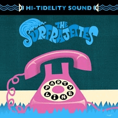

the Surfrajettes - Party Line / Toxic (Single, 2018)
01 - Party Line (3:08)
02 - Toxic (3:23)
© Hi-Tide Recordings :: [HT-015]
Notes
Toronto, Canada.
Sarah Butler - Bass guitar
Nicole Damoff - Electric guitar
Shermy Freeman - Electric guitar
Anna Liebel - Drums
Artwork by Fred Lammers
"Party Line" written by Damoff/Freeman
"Toxic" written by Dennis/Karlsson/Winnberg/Jonback
reference information: Discogs®
Review
003/366 (Project 366)
Fashionable single from the female Surf band, and probably watching their gigs is no less pleasant than listening to their recordings. The cover of the single is very attractive (in its general sense and in matter of genre). So, it is likely that there are already certain feelings before the first track starts playing.
"Party Line" begins with a phone ringing. Noisy tinkle gradually switches to the melody: drums, guitar, another one and let us surf! "Hello?!" with already pretty rhythm and groove. This instrumental thing is already becoming increasingly clear. And "Yes, I am there" as an answer for the backing voice insert. And, of course, "I can.. I can!" to hear this sweet tune. Full of attention. Maybe on my own taste - there is a bit overburdening sound, but still surfin' with a shining harmony. Even a little spy and adventure themed. Vibrant tone and drums fit well into the overall picture of instrumental sound. Guitar twist, rolling, surfing, twanging - pretty too. However sometimes slightly discordantly, sometimes hulking. Anyhow still thematically and conceptually. Streaming and quite likely that it is groovin'.
"Toxic" is very expressive, maybe even a twisting serenade. Pretty emotional and beautiful. But in some places conception is overtightened and sometimes sound is not quite smooth. Drums are a bit out of the general flow, but they respond well to the sound of the group. Basically, all this is suitable for that kind of Surf. For my own taste - not enough sharpness and assertiveness with this track. And maybe good to hear it with a little more knotted tune. Though track is a surfadelic enough...
Generally speaking, I liked their debut single more. But this reviewed single looks pretty nice too and I enjoyed how "Party Line / Toxic" was done. Spiced songs in fact. And with some tides that bring sensations to the listener. So, desire to heed appears and there remains a certain mood to listen to the Surfrajettes recordings in the future. And even catch the wave!